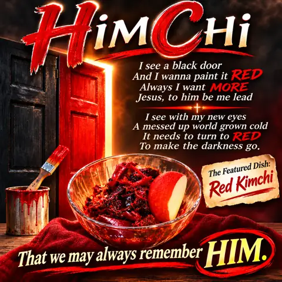

Jesus TV — Spirit World Audience
Unplaced 18 November 2026 · Sacred imagination
Tens of thousands of spirits tune in to hear Greg Muller sing with Jesus on Jesus TV. Meanwhile, two or three mortals also tune in.
Reconstruction notes
Wide, luminous celestial TV-broadcast poster: a multitude of robed spirits in golden clouds watching Greg Muller and Jesus singing together on a crowned Jesus TV screen. Main headline: “Tens of Thousands of Spirits in the Spirit World Tune In to Listen to Greg Muller Sing with Jesus on Jesus TV!” Fine print: “According to recent surveys of my sacred imagination.” Additional disclaimer: “As far as we can tell, an average of two to three mortals also tune in.”
Full-size original: Jesus TV original in Drive. Gallery holds only a compressed thumbnail.

HimChi — Paint It Red
Unplaced 18 November 2026 · VeilKey / Food Room
Red kimchi as a Jesus-reminding VeilKey. A black door painted red, new eyes, and the invitation: “That we may always remember HIM.”
Reconstruction notes
Square cinematic black-and-red poster. Large title “HimChi” with oversized brushstroke red H and C. Left: black door beside an open red-painted door glowing with golden light, paintbrush and red paint can. Foreground: glass bowl of vivid red kimchi with a red apple wedge. Cream italic verses at upper right: “I see a black door / And I wanna paint it red / Always I want MORE / Jesus, to him be me lead / I see with my new eyes / (a)Messed up world grown cold / It needs to turn to red / To make the darkness go”. Emphasize RED and MORE in red. Parchment tag: “The Featured Dish: Red Kimchi”. At bottom in large cream lettering: “That we may always remember HIM.” with HIM enlarged and circled in a red brushstroke oval.
Full-size original archived in Google Drive as himchi-2026-11-18-full.png; only the compressed 480 × 480 WebP thumbnail is stored here.

The Kingdom of God Is Coming
Unplaced 17 November 2026
“Jesus keeps reminding me...” The United States of America is soon going to be taken over by the Kingdom of God. A message of Zion, with a practical reminder not to quit one's country until Jesus naturalizes you in Zion.
Reconstruction notes
Square dramatic poster: American flag at left, symbolic white-and-gold Zion flag with crown and olive wreath at right, luminous gold sunset clouds. Main text: “JESUS KEEPS REMINDING ME... The United States of America is soon going to be taken over... BY THE KINGDOM OF GOD. Not merely another political party. Not another earthly empire. The Kingdom of God is coming.” Small footer: “Don't quit your job until you get a new one. Don't quit your country until Jesus naturalizes you in Zion.” Hashtags: #HearHim #NotHearGreg.
Full-resolution approved original archived separately in Google Drive as zion-kingdom-coming-2026-11-17.webp; this gallery stores only the small thumbnail.
Jesus Is Pretty Tricky
Unplaced 13 November 2026 · Hope for Zion
Jesus can get the devil to do His work. The devil regrets tempting Eve.
Image status: Compressed actual-artwork thumbnail (480 × 320 WebP, about 29 KB). Full-size artwork is not stored in this gallery.
Reconstruction notes
Wide cinematic sunset. Jesus smiling knowingly at left, in a cream robe
and burgundy cloak. At right a horned red devil struggles to haul a large
cross-carved stone using a rope. Large headline: “Jesus is pretty tricky...
He can get the devil to do His work”. Speech bubble from the devil:
“Dam, I should never have tempted Eve”. Small signature: “Hope for Zion”.
Recreation is approximate, not guaranteed pixel-identical.
Keep a full-resolution original in a separate archive whenever possible.

Jesus, I Love Your Kind of Magic
Unplaced 17 November 2026
Jesus Pillow and Jesus Carrot sit beside a smiling Jesus. Playful legal fine print ends with #HearHim #NotHearGreg.
Reconstruction notes
Use a vertical 4:5 storybook poster. Set “Jesus, I love your kind of MAGIC” and “Jesus you are MAGICAL” in large cream lettering with glowing gold emphasis. Show Jesus smiling in a sunlit room with a carrot and pillow on the table. Set the following in small white type on a navy panel.
Officially, the Church of Jesus Christ of Latter-day Saints does not officially approve nor disapprove of Halloween, Santa Clause, HomeSchooling or my personal use of words like magic, magical, mystical, Jesus Pillow, Jesus Carrot, redeemed-rock-songs, etc. in the context of me describing spiritual things I see around me.
#HearHim #NotHearGreg
Original: Magical Jesus in a Cozy Room.png